UI: Components
Chronology
A chronology is a list of events in the order in which they occurred. It is a useful way to present information in a linear fashion, and it can be used to show the progression of events over time.
- Best Picture
-

The Godfather
A powerful crime saga following the Corleone family's rise and near fall within organized crime

-
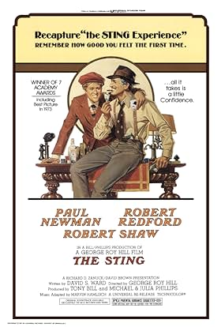
The String
A captivating story of two con men who team up to pull off the ultimate revenge scheme against a mob boss.
-
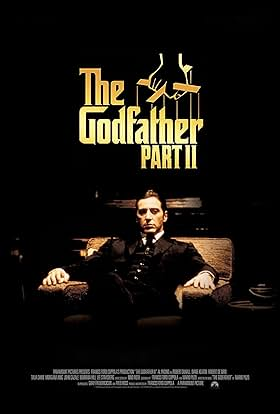
The Godfather 2
A masterful continuation and prequel to the Corleone family saga, blending present-day power struggles with Vito Corleone's early years.
-
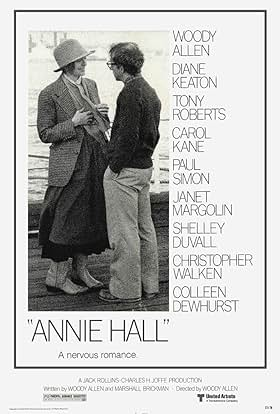
Annie Hall
A witty romantic comedy exploring the quirky relationship between a neurotic comedian and an aspiring singer.
-

Rocky
An inspirational tale of an underdog boxer who gets a once-in-a-lifetime chance to fight for the heavyweight championship.
-
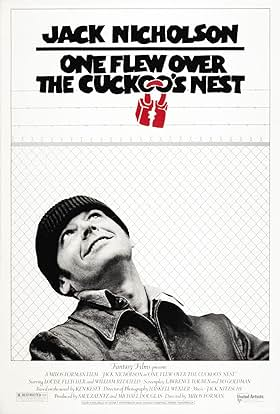
One Flew Over The Cuckoo's Nest
A compelling drama about a rebellious patient in a mental institution who challenges the oppressive nurse in charge.
-
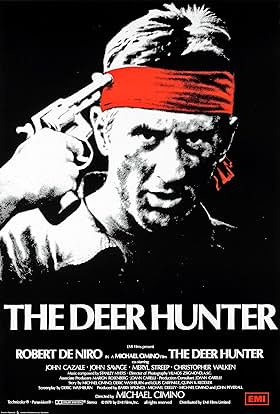
The Deer Hunter
A harrowing depiction of the impact of the Vietnam War on a group of friends from a small industrial town.
-
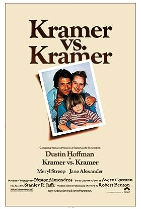
Kramer vs. Kramer
A touching drama about a father who must raise his son alone after his wife leaves, only to face a custody battle when she returns.
-
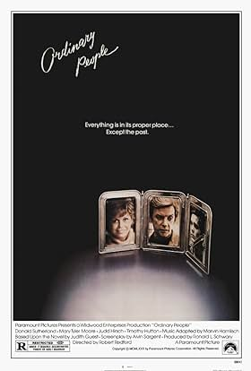
Ordinary People
A poignant story of a family's struggle to cope with the aftermath of a tragic accident and their journey towards healing.
-
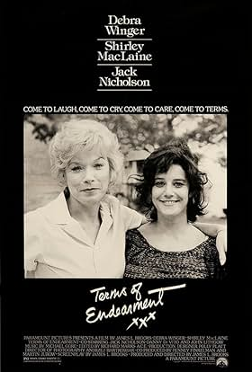
Terms of Endearment
A heartwarming drama about the complex relationship between a mother and daughter, spanning three decades of love, loss, and laughter.
-
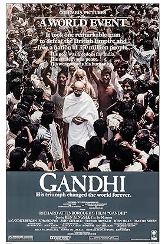
Gandhi
An epic biographical film that chronicles the life of Mahatma Gandhi, the leader of the non-violent resistance movement against British colonial rule in India.
-
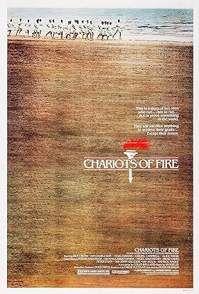
Chariots of Fire
An inspiring true story of two British athletes who overcome personal and societal challenges to compete in the 1924 Olympics.
-
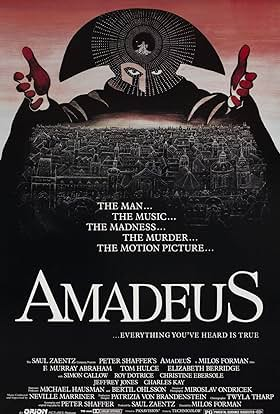
Amadeus
An imaginative retelling of the life of Wolfgang Amadeus Mozart, as seen through the eyes of his envious rival, Antonio Salieri.
-
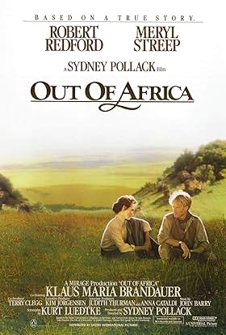
Out of Africa
A sweeping romantic drama based on the memoirs of Danish author Karen Blixen, who lived in Kenya and fell in love with a British hunter.
-
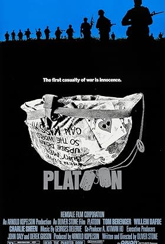
Platoon
A gritty and realistic portrayal of the Vietnam War, focusing on the experiences of a young soldier caught in the conflict.
-
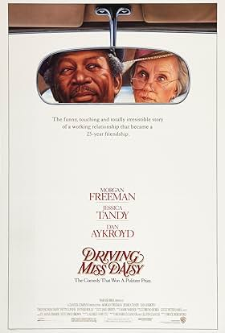
Driving Miss Daisy
A heartwarming tale of the decades-long friendship between an elderly Jewish widow and her African American chauffeur.
-
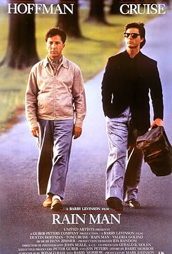
Rain Man
A heartwarming drama about the relationship between two brothers, one of whom is an autistic savant, as they embark on a cross-country road trip.
-
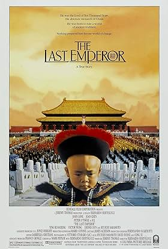
The Last Emperor
An epic biographical film that chronicles the life of Puyi, the last Emperor of China, from his ascent to the throne as a child to his abdication and exile.
-
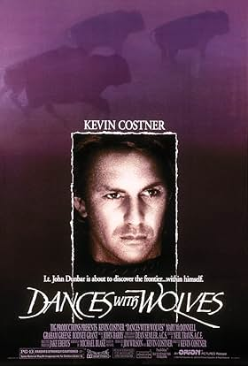
Dances with Wolves
An epic Western film that follows the journey of a Union Army lieutenant who befriends a tribe of Lakota Sioux Indians.
-
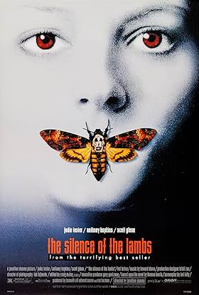
The Silence of the Lambs
A chilling psychological thriller about an FBI trainee who seeks the help of a brilliant but deranged psychiatrist to catch a serial killer.
-
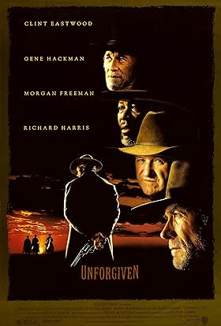
Unforgiven
A gritty Western film that deconstructs the myth of the Old West by following an aging outlaw who comes out of retirement for one last job.